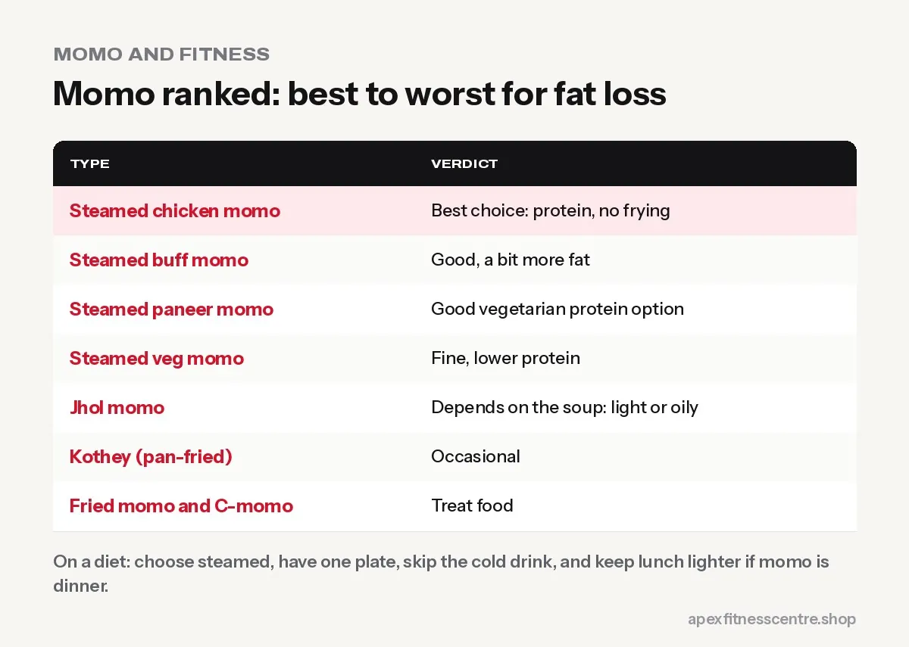

Can You Eat Momo and Still Lose Weight? A Practical Guide
How momo fits a fat loss or muscle gain diet, which type is healthiest, smart portion sizes, and how to make protein-packed momo at home.

Yes, you can eat momo and still lose weight. No single food makes you fat; your total intake over days and weeks does. The problem is usually how many momo, how they’re cooked, and what comes with them. Here’s how to keep momo in your life while reaching your fitness goals.
What’s in a plate of momo?
It depends a lot on the filling, the wrapper thickness, the cooking method and the portion. As a rough guide:
- Steamed chicken or buff momo: moderate calories, a decent amount of protein from the filling.
- Veg momo: fewer protein, often more oil in the filling.
- Fried momo and kothey: much more fat and calories.
- C-momo and jhol momo with oily sauces: extra calories from the sauce.
A typical plate of 10 steamed momo can be a full meal’s worth of calories. Two plates with a cold drink is a big meal.
Momo ranked: best to worst for fat loss
| Type | Verdict |
|---|---|
| Steamed chicken momo | Best choice: protein, no frying |
| Steamed buff momo | Good, a bit more fat |
| Steamed paneer momo | Good vegetarian protein option |
| Steamed veg momo | Fine, lower protein |
| Jhol momo | Depends on the soup; can be light or oily |
| Kothey (pan-fried) | Occasional |
| Fried momo and C-momo | Treat food |

How to eat momo on a diet
- Choose steamed.
- Pick chicken, buff or paneer for more protein.
- Have one plate, not two. Add a salad or soup if you’re still hungry.
- Skip the cold drink. Have water or tea instead.
- Use achar normally. Tomato-based achar is light; oily or sesame-heavy versions add calories.
- Plan it. If you know you’re having momo for dinner, keep lunch lighter.
Momo for muscle gain
Momo can be a good protein meal if you choose meat or paneer fillings. For muscle gain, a plate of steamed chicken momo plus a glass of milk or a bowl of curd is a solid post-workout meal. See what to eat after a workout.
Make high-protein momo at home
- Filling: lean chicken mince or paneer, with plenty of onion, cabbage, ginger, garlic, coriander.
- Less oil: a teaspoon in the filling is enough for flavour.
- Thinner wrappers mean more filling per piece.
- Steam, don’t fry.
- Homemade tomato achar with sesame in moderation.
Homemade momo let you control oil and portion size, and the whole family can enjoy them.
The 80/20 approach
If you follow a sensible diet most of the time, one or two momo meals a week fit easily into fat loss or muscle gain. Problems start when momo, chowmein and fried snacks become daily habits. See our weight loss diet plan with Nepali food.
A sample day that includes momo
You don’t have to give up momo to lose fat. Here’s how a day might look when momo is your lunch:
| Meal | Example |
|---|---|
| Breakfast | 2–3 boiled eggs, a roti or a bowl of oats, tea with less sugar |
| Lunch | 1 plate (8–10 pieces) of steamed chicken momo with achar, plus a cucumber or radish salad |
| Snack | Fruit and a bowl of curd, or roasted chana |
| Dinner | Smaller portion of rice, a big serving of dal, saag and a palm-sized piece of chicken, fish, paneer or tofu |
The key is that the rest of the day is lighter and higher in protein. If you have fried momo or a large jhol momo, keep dinner lighter still.
Eating out with friends
- Order steamed for the group and share one fried or chilli plate.
- Eat slowly and stop when you’re satisfied, not stuffed.
- Skip the sugary drink: choose water, soda water or plain tea.
- Don’t “save” calories by starving all day; you’ll overeat in the evening.
Frequently asked questions
Is momo healthy?
Steamed momo with a lean filling can be a reasonably balanced meal. Fried versions with heavy sauces are better as occasional treats.
How many momo can I eat on a diet?
One plate as a meal is reasonable for most people. Adjust the rest of the day’s food around it.
Is veg momo healthier than chicken momo?
Not necessarily. Chicken momo usually provide more protein; veg momo can contain plenty of oil. Steamed lean meat or paneer momo are often the better choice.
Is jhol momo fattening?
It depends on the soup. Light tomato-based jhol is fine; oily, sesame-heavy jhol adds a lot of calories.
Sources
- WHO fact sheet: obesity and overweight (World Health Organization)
- ISSN position stand: protein and exercise (Jäger et al., 2017)
General information, not medical advice.
General information, not medical advice. Ask a doctor if you have a health condition. Results vary from person to person.
Comments
Loading comments…